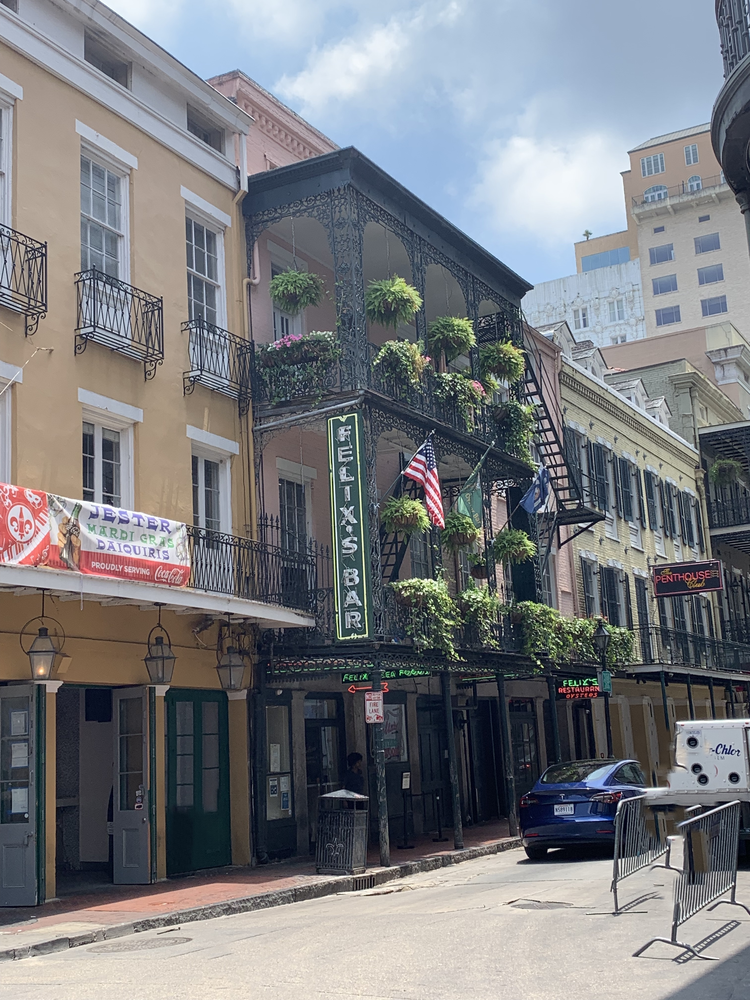
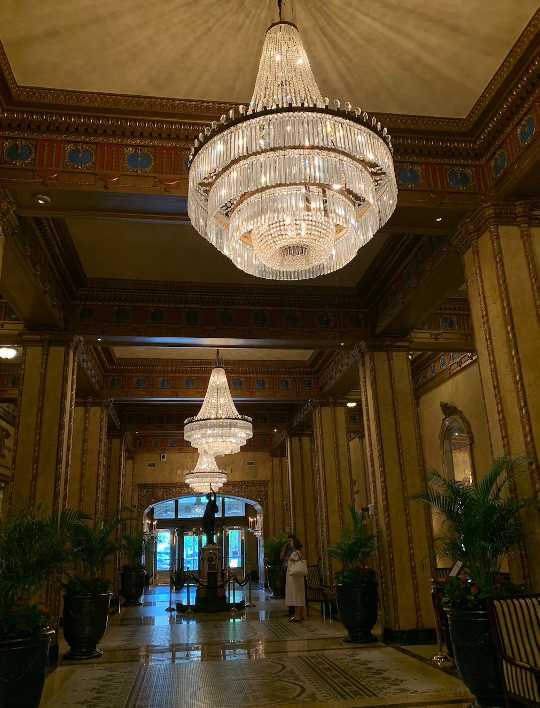
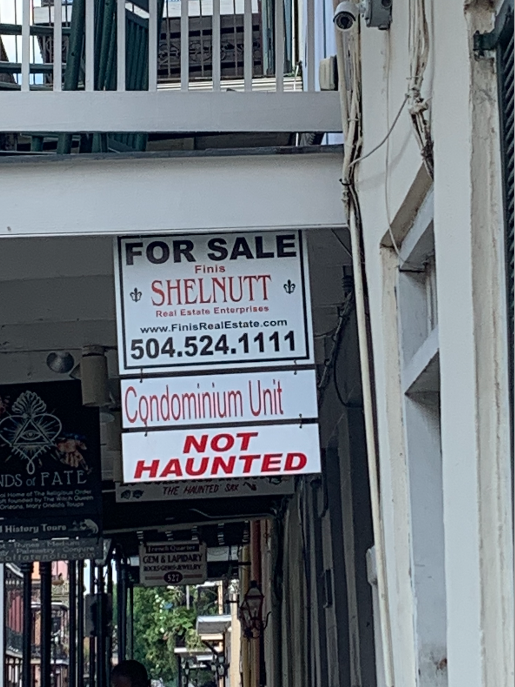
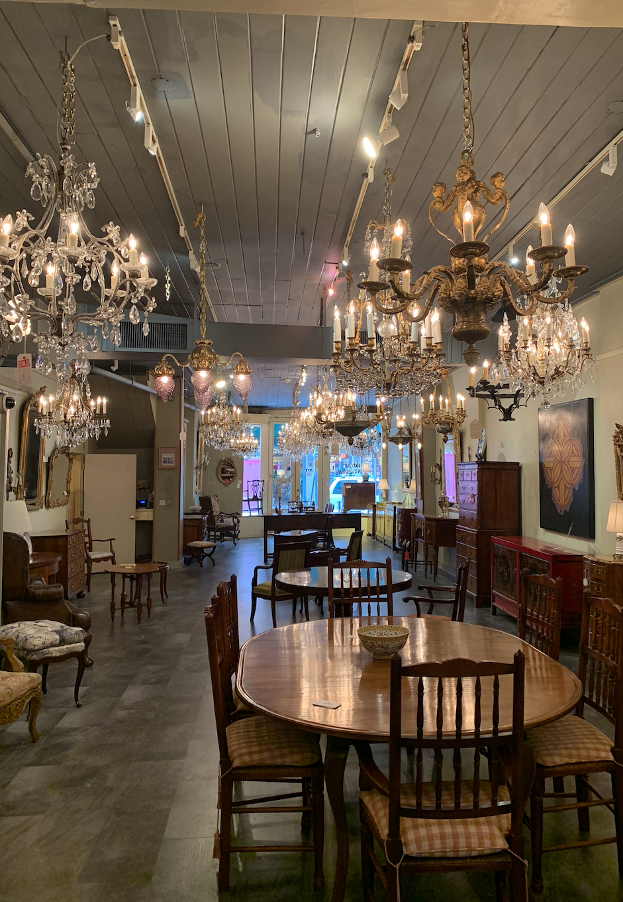
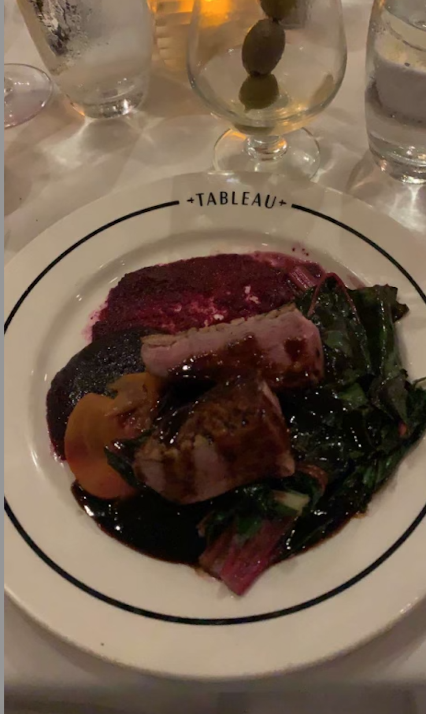
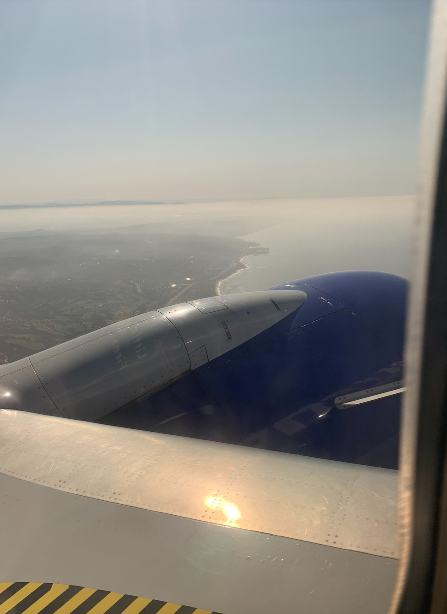

New Orleans’ Expansive History Through A Visitor’s Eyes
When I visited New Orleans, I fell in love with the unique culture and rich history of the city. From beignets to ghost tours to live jazz to traditional meals, I was charmed by its Southern hospitality and intrigued by its gothicness.

Right outside of my hotel laid blocks and blocks of colorful, tall buildings, including Felix’s Oyster Bar in the French quarter. Having opened in 1940, Felix’s claims prime real estate along the popular block with its three stories of food, drinks and live music. We stopped into Felix and enjoyed oysters and frog legs as our first stop!

The lobby of the Roosevelt Hotel, where we stayed, still holds its original tile floor and refurbished chandeliers from its redesign in 1923. The historic hotel has modernized its rooms, but the lobby feels directly from the era. The lobby contains art from as early as 1867. We checked in here after lunch, and I was amazed by the beauty of the lobby.

“NOT HAUNTED” is a common selling point among the historical homes in the French Quarter. Due to New Orleans’ spiritual history spanning back centuries, many New Orleans residents believe in the presence of spirits and their ability to possess certain historical places. With proper respect, these spirits remain docile. As we walked throughout the French Quarter to finish out our first day, these signs became more and more common.

This antique furniture store in the French quarter we stopped in sold chandeliers, tables, pianos and chairs dating back to the 18th century. Each piece was unique and especially cared for in restoration. It was clear that the sellers of these pieces cared deeply about the history surrounding them.
Cafe Du Monde, however touristy it has become, is a must on any trip to the French Quarter. Established in 1862, the 24-hour bakery sticks to a historical family recipe for flaky, decadent beignets served with fresh coffee. For breakfast on our second day, I had two beignets and a coffee.
After breakfast, we visited Jackson Square, where the Louisiana Purchase was made officially making Louisiana a U.S. territory. The square was home to many artists, tarot card readers and street vendors but remained peaceful with its stately trees and large fountain. As we walked through the square, I saw beautiful art and was wowed by the winding trees- which were decades old and still tall and fresh.

For our last dinner, we visited Tableau, a restaurant connected to Le Petit Theatre, a theater that opened in 1816 and still puts on shows today. I had Duck Creole, a traditional New Orleans dish. The restaurant modernized it with a beet sauce, and the sweetness complimented the traditional Creolean spice.

After a quick weekend in New Orleans, it was time to go back to Saint Louis. When I got home, I began to notice Saint Louis’ own connections to New Orleans, taking inspiration from the French Quarter’s architecture in areas such as Soulard. Although Saint Louis does not have the same deep history as New Orleans, it is nice to return to a place that reminds me of my favorite city in the world, New Orleans.